Edukasi
Informasi dan Edukasi Seputar Khitan
Materi singkat untuk membantu orang tua mempersiapkan dan mendampingi anak.
Video
Perawatan di rumah
Mandi dan membersihkan tubuh anak setelah khitan. Ajarkan anak cara membersihkan diri dengan kain lap secara perlahan.
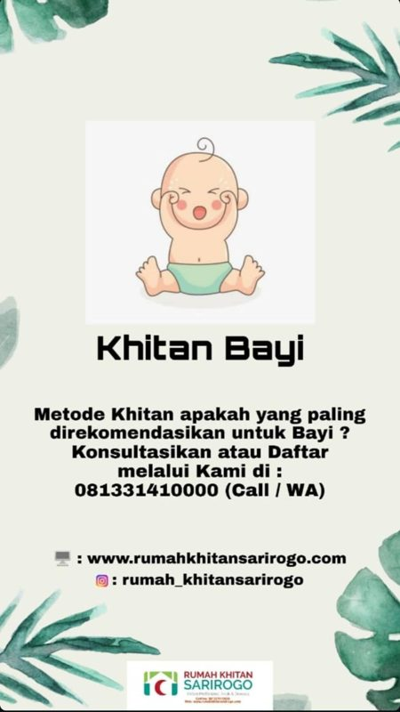
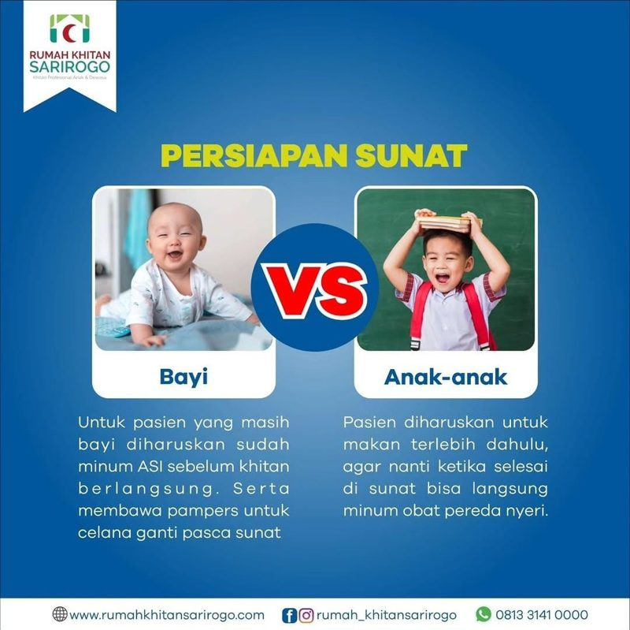
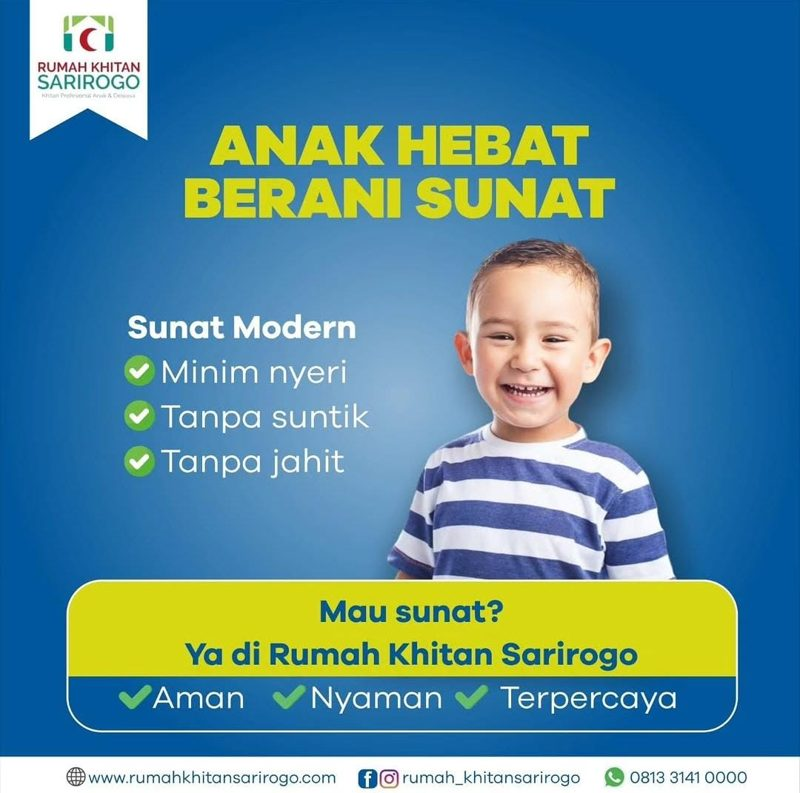
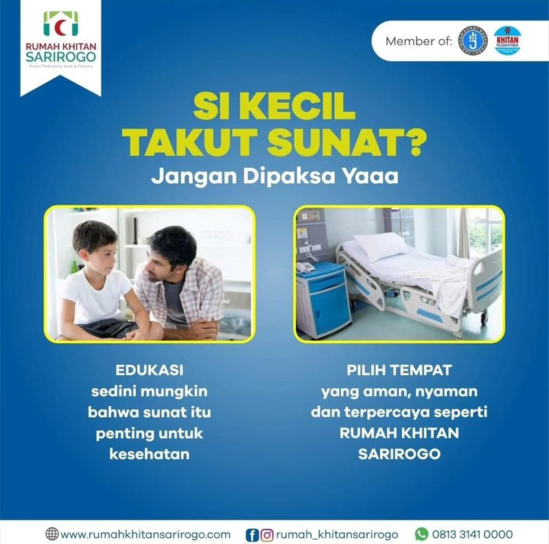
Anak Takut Disunat? Jangan Dipaksa
Pahami perasaan anak dan pilih tempat yang nyaman.
Tanyakan ke Klinik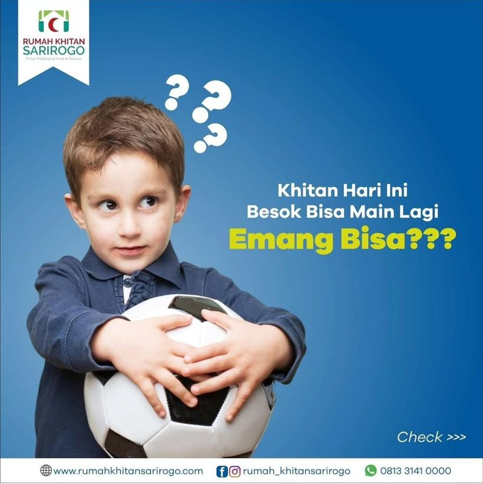
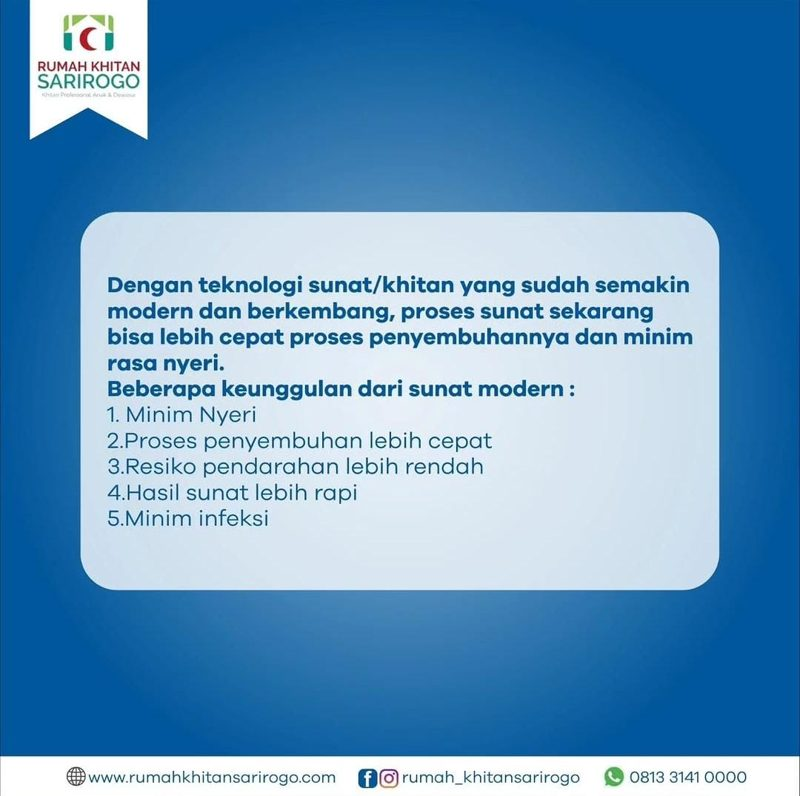
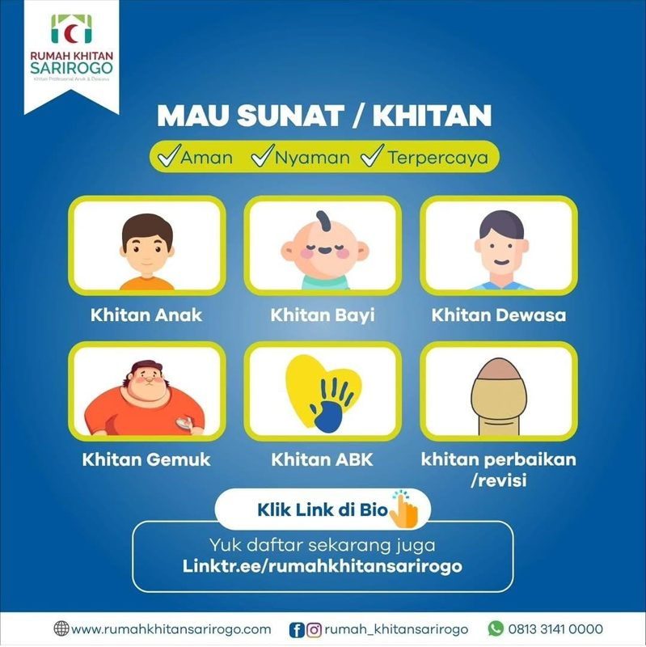
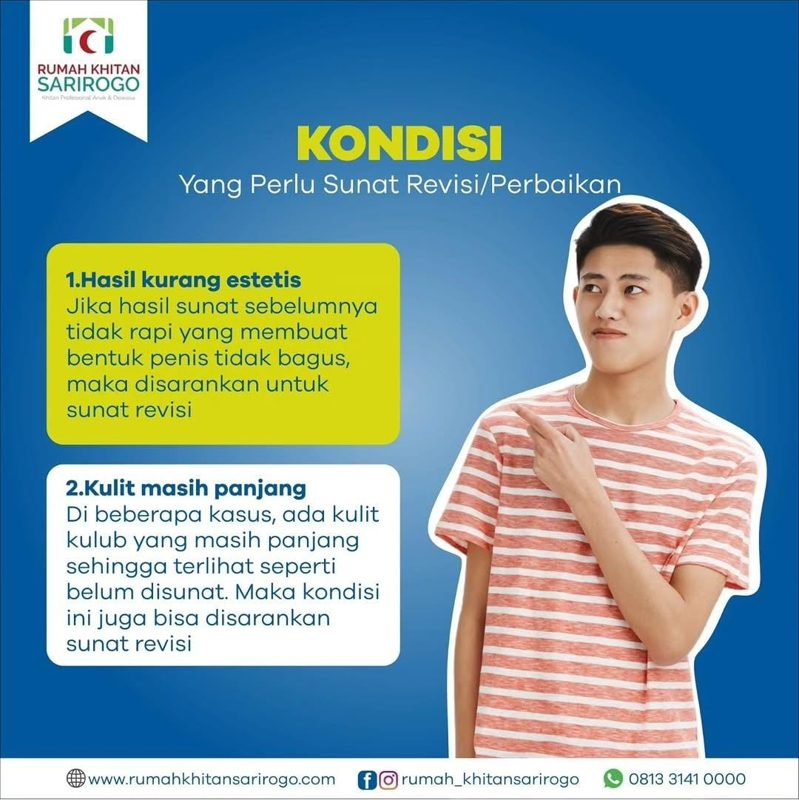
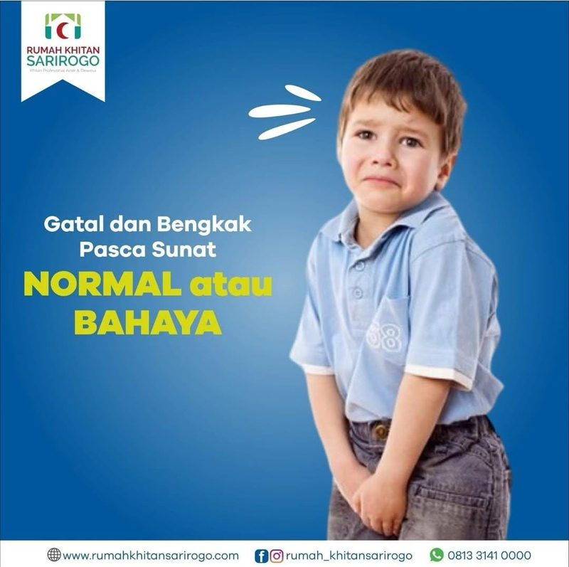
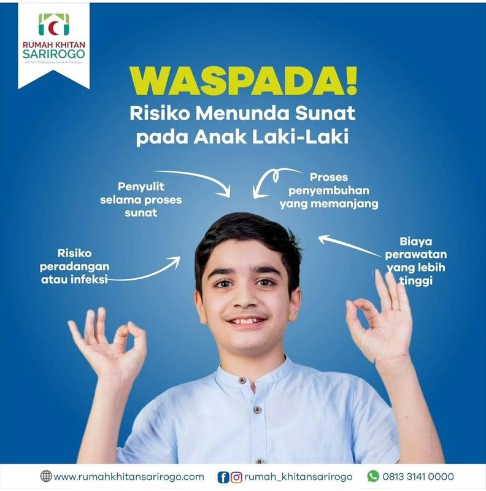
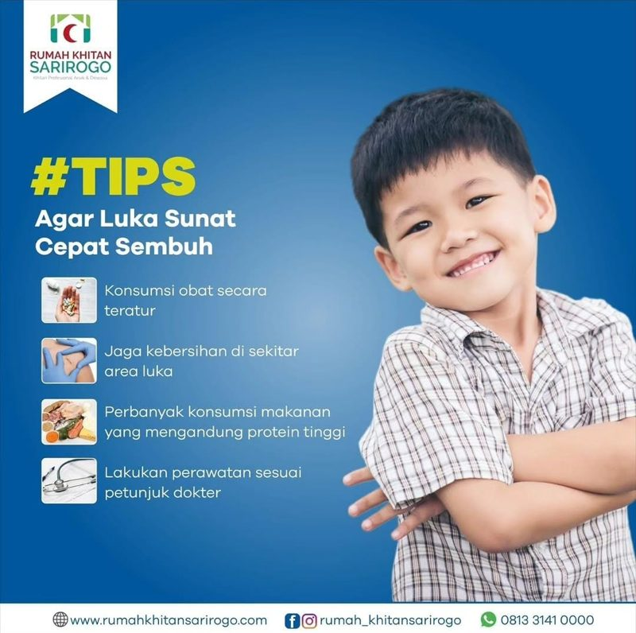
Informasi edukasi ini bersifat umum dan tidak menggantikan konsultasi dengan tenaga medis. Untuk keluhan setelah khitan, segera hubungi klinik atau dokter.
Ada pertanyaan tentang kondisi anak?
Konsultasikan dengan tim kami melalui WhatsApp.